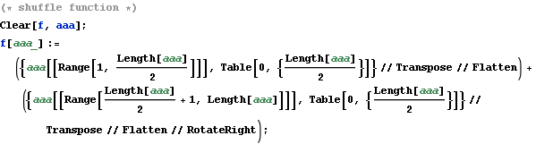
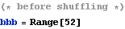
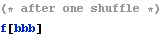
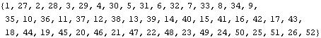
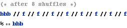
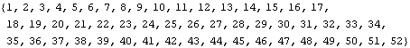
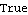
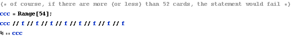
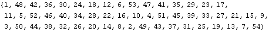
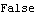

8 Perfect Faro Shuffles
It’s said that if a deck is perfectly shuffled eight times, the cards will be in the same order as they were before the shuffling.
Here is an experiment on it.









